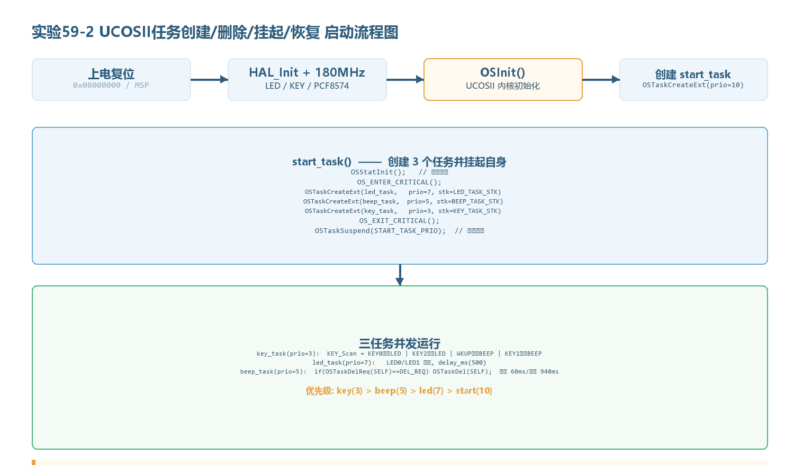
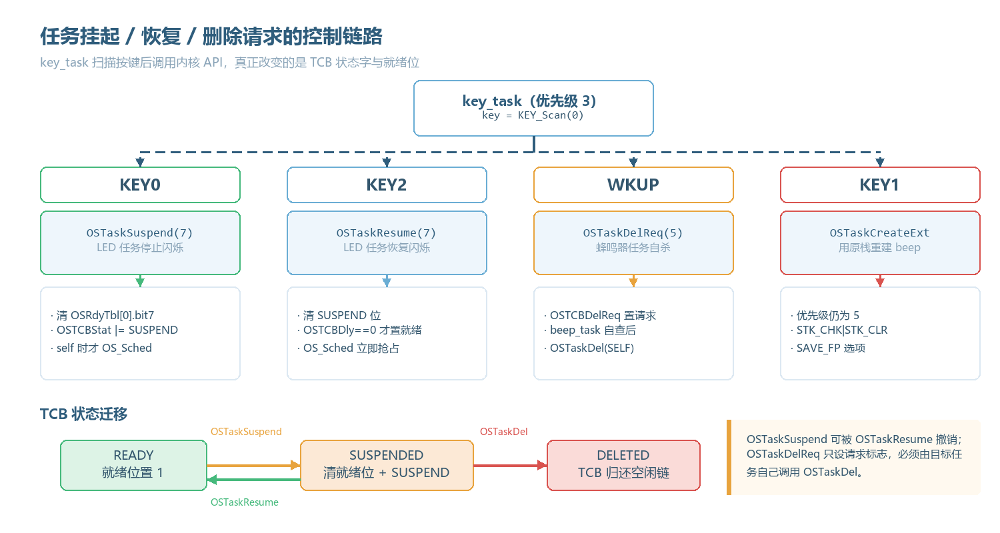
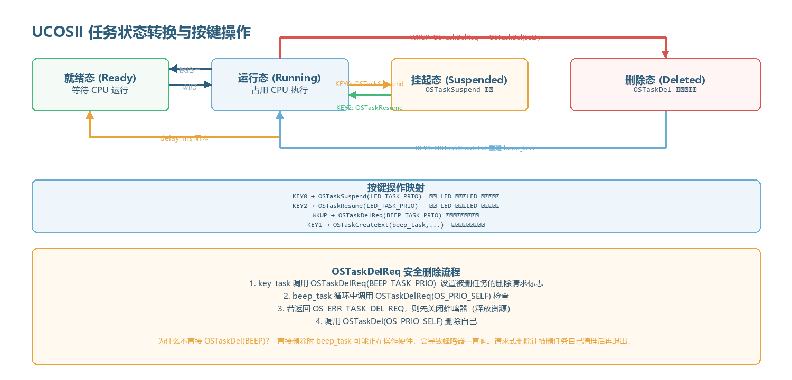
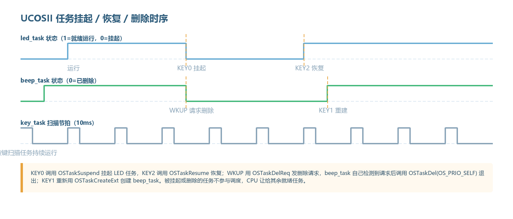

01 实验目标与硬件资源
运行中动态改变任务状态：KEY0 挂起、KEY2 恢复、WKUP 请求删除、KEY1 重建
实验 59-1-2 在 59-1-1 的基础上把“任务生命周期”暴露给按键：LED 任务以 500 ms 翻转，蜂鸣器任务每 1 s 响 60 ms，按键任务优先级最高，扫描到按键后调用内核 API。四个按键对应四种控制语义，观察 LED 与蜂鸣器的即时变化。
| 任务 | 优先级 | 栈 | 行为 |
|---|---|---|---|
| KEY | 3 | 128 OS_STK | 每 10 ms 扫描一次按键并执行控制 |
| BEEP | 5 | 128 OS_STK | 响 60 ms、停 940 ms，循环前检查删除请求 |
| LED | 7 | 128 OS_STK | 每 500 ms 同时翻转 LED0/LED1 |
| START | 10 | 128 OS_STK | OSStatInit 后创建三个任务并挂起自己 |
| 统计 / 空闲 | 62 / 63 | 内核配置 | CPU 使用率统计 / 兜底 |
| 按键 | 键码 | 动作 | 现象 |
|---|---|---|---|
| KEY0 | KEY0_PRES = 1 | OSTaskSuspend(7) | LED 立即停止翻转，保留当前亮/灭状态 |
| KEY2 | KEY2_PRES = 3 | OSTaskResume(7) | LED 恢复 500 ms 翻转 |
| WKUP | WKUP_PRES = 4 | OSTaskDelReq(5) | 蜂鸣器最多再响一次后自杀 |
| KEY1 | KEY1_PRES = 2 | OSTaskCreateExt(beep_task, 5) | 蜂鸣器重新开始 1 s 周期 |
/* HARDWARE/KEY/key.h：按键返回值，0 表示无键按下 */ #define KEY0_PRES 1 // KEY0 → 挂起 LED #define KEY1_PRES 2 // KEY1 → 重建 BEEP #define KEY2_PRES 3 // KEY2 → 恢复 LED #define WKUP_PRES 4 // WK_UP → 请求删除 BEEP
关键逻辑
- KEY 任务优先级 3 最高，按键响应不会被 LED 或 BEEP 的长延时拖住。
- 挂起/恢复的是“任务”，不是“LED 电平”；挂起后 LED 停在当前状态，恢复后从
while(1)的下一条语句继续。 - WKUP 只是“请求删除”，真正删除由 BEEP 任务自己执行，避免在别人栈上强行摘链。
- KEY1 重建使用原来那块静态栈，删除后优先级 5 被释放，才能再次创建成功。
02 工程结构与源码地图
相比 59-1-1，多了 KEY 驱动与 PCF8574（蜂鸣器）驱动，内核部分完全复用
| 文件 | 本页关注点 |
|---|---|
| USER/main.c | start_task、led_task、beep_task、key_task |
| HARDWARE/KEY/key.c | KEY_Scan：20 ms 消抖、单次触发 |
| HARDWARE/PCF8574/pcf8574.c | PCF8574_WriteBit(BEEP_IO, 0/1) 控制蜂鸣器 |
| UCOSII/uCOS-II/Source/os_task.c | OSTaskSuspend、OSTaskResume、OSTaskDelReq、OSTaskDel |
| UCOSII/uCOS-II/Source/os_core.c | OS_TCBInit、OS_Sched、OSStatInit |
| UCOSII/uCOS-II/Ports/ARM-Cortex-M4/Generic/RealView | PendSV、PRIMASK 临界区、OSTaskStkInit |
| SYSTEM/delay/delay.c | delay_init、SysTick_Handler、delay_ms → OSTimeDly |
| CORE/startup_stm32f429xx.s | Reset_Handler、向量表、FPU 使能 |
/* includes.h 的统一入口，应用层不直接包含内核私有头 */ #include <stdio.h> #include "ucos_ii.h" // 内核 API、OS_TCB、OS_STK #include "os_cpu.h" // 临界区宏、OS_STK_GROWTH、OS_TASK_SW #include "os_cfg.h" // 任务/事件/节拍裁剪 #include "app_cfg.h" // 应用级配置（本工程为空壳）
关键逻辑
- 任务控制 API 都在
os_task.c，但应用只通过ucos_ii.h的声明调用，不关心实现。 KEY_Scan内部调用delay_ms(10)；OS 启动后它等价于OSTimeDly(10)，不会忙等。- PCF8574 走 I2C，写一位就要一次总线事务；蜂鸣器任务每 1 s 只写两次，负载很轻。
03 启动流程总览
main 只负责初始化与启动，真正的任务装配在 start_task 里完成

int main(void)
{
HAL_Init(); // HAL 基础与 SysTick 初值
Stm32_Clock_Init(360, 25, 2, 8); // SYSCLK 180 MHz
delay_init(180); // 1 tick = 1 ms
uart_init(115200);
LED_Init(); // PB0/PB1
KEY_Init(); // KEY0/KEY1/KEY2/WK_UP
PCF8574_Init(); // I2C 扩展 IO，蜂鸣器接在 BEEP_IO
OSInit(); // 空闲任务 63、统计任务 62、就绪表清零
OSTaskCreateExt((void (*)(void *))start_task,
(void *)0,
(OS_STK *)&START_TASK_STK[START_STK_SIZE - 1],
(INT8U)START_TASK_PRIO,
(INT16U)START_TASK_PRIO,
(OS_STK *)&START_TASK_STK[0],
(INT32U)START_STK_SIZE,
(void *)0,
(INT16U)(OS_TASK_OPT_STK_CHK | OS_TASK_OPT_STK_CLR | OS_TASK_OPT_SAVE_FP));
OSStart(); // 跳到优先级 10 的 start_task，不返回
}
关键逻辑
- 外设初始化全部在
OSInit之前完成，避免任务已经开始调度、外设却还没配好。 - 所有任务选项都带
OS_TASK_OPT_SAVE_FP，作者注释写明“为了保险起见，所有任务都保存浮点寄存器”。 OSStart之后 CPU 运行在 PSP 上，MSP 留给中断；这是 Cortex-M 双栈机制的典型用法。start_task第一件事是OSStatInit()，它会主动延时约 102 ms 来测空闲计数。
04 时钟与 SysTick 时基
挂起/恢复的时间语义全部建立在 1 ms 节拍上：延时 500 就是 500 个 tick
void delay_init(u8 SYSCLK)
{
u32 reload;
HAL_SYSTICK_CLKSourceConfig(SYSTICK_CLKSOURCE_HCLK); // HCLK = 180 MHz
fac_us = SYSCLK / 8;
fac_ms = (u16)fac_us * 1000;
reload = SYSCLK * 1000000 / delay_ostickspersec; // 180000
SysTick->LOAD = reload - 1; // 24 位递减计数器
SysTick->VAL = 0;
SysTick->CTRL |= 1 << 1; // TICKINT
SysTick->CTRL |= 1 << 0; // ENABLE
}
void SysTick_Handler(void)
{
HAL_IncTick(); // HAL 的毫秒计数
if (delay_osrunning == 1) {
OSIntEnter(); // 中断嵌套计数 +1
OSTimeTick(); // 所有 OSTCBDly 减 1
OSIntExit(); // 退中断，必要时切任务
}
}
关键逻辑
- SysTick 中断优先级为 15（最低），与 PendSV 相同，因此临界区用 PRIMASK 能同时挡住两者。
OSTimeTick只减计数、置就绪；如果被挂起（SUSPEND）的任务延时到 0，也不会被置就绪。- LED 的 500 ms、BEEP 的 60/940 ms 都是 tick 数，改
OS_TICKS_PER_SEC会直接改变实际时间。
如果按键响应明显变慢，先确认
delay_ms 是否真的走 OSTimeDly；若在 OSStart 前调用，它仍是忙等。05 启动汇编与 C 运行时
PendSV 与 SysTick 的向量必须在向量表里指向正确实现，否则任务永远切不出去
__Vectors DCD __initial_sp ; 初始 MSP DCD Reset_Handler ; 复位入口 DCD NMI_Handler DCD HardFault_Handler ... DCD PendSV_Handler ; os_cpu_a.asm：上下文切换 DCD SysTick_Handler ; delay.c：1 ms 节拍 Reset_Handler PROC LDR R0, =SystemInit BLX R0 LDR R0, =__main BX R0 ; 拷贝 .data、清零 .bss、调用 main ENDP
关键逻辑
- Reset_Handler 里还有 FPU 使能指令；本实验所有任务都带 SAVE_FP，FPU 必须打开。
__main完成 C 运行时环境后才进main()，所以全局变量在 main 里已经是初值。- 向量表默认在 Flash 0x08000000；本工程没有做 IAP 重定位，不需要改
SCB->VTOR。
06 main 初始化与外设
按键、LED、蜂鸣器三条外设链路都必须在 OSInit 之前就绪
HAL_Init(); // NVIC 分组、SysTick 初值、HAL_MspInit Stm32_Clock_Init(360, 25, 2, 8); // 180 MHz delay_init(180); // 1 ms 节拍 uart_init(115200); // printf 调试口 LED_Init(); // PB0/PB1 推挽输出 KEY_Init(); // KEY0/1/2 上拉输入，WK_UP 下拉输入 PCF8574_Init(); // I2C1 + PCF8574，BEEP_IO 默认输出高（蜂鸣器关）
/* HARDWARE/KEY/key.c：20 ms 消抖 + 单次触发 */ u8 KEY_Scan(u8 mode) { static u8 key_up = 1; // 松开标志，static 保持跨调用状态 if (mode == 1) key_up = 1; // 支持连按 if (key_up && (KEY0 == 0 || KEY1 == 0 || KEY2 == 0 || WK_UP == 1)) { delay_ms(10); // 消抖，OS 启动后会让出 CPU key_up = 0; if (KEY0 == 0) return KEY0_PRES; else if (KEY1 == 0) return KEY1_PRES; else if (KEY2 == 0) return KEY2_PRES; else if (WK_UP == 1) return WKUP_PRES; } else if (KEY0 == 1 && KEY1 == 1 && KEY2 == 1 && WK_UP == 0) { key_up = 1; // 全部松开，允许下一次触发 } return 0; }
关键逻辑
key_up是 static，函数返回后仍保留；这样按住不放只返回一次键码。- KEY0/1/2 是低有效（按下为 0），WK_UP 是高有效（按下为 1），所以判断条件不同。
- PCF8574 的
BEEP_IO输出 0 打开蜂鸣器、输出 1 关闭，和 LED 的低电平点亮一致。
07 任务控制块与挂起
挂起一个任务只做两件事：清就绪位、在状态字里加 SUSPEND

INT8U OSTaskSuspend(INT8U prio)
{
BOOLEAN self;
OS_TCB *ptcb;
INT8U y;
OS_ENTER_CRITICAL();
if (prio == OS_PRIO_SELF) { // OS_PRIO_SELF = 0xFF
prio = OSTCBCur->OSTCBPrio; // 解析成真实优先级
self = OS_TRUE;
} else if (prio == OSTCBCur->OSTCBPrio) {
self = OS_TRUE; // 挂起自己也要立即切换
} else {
self = OS_FALSE; // 挂起别人，不切换
}
ptcb = OSTCBPrioTbl[prio];
if (ptcb == (OS_TCB *)0) { // 任务不存在
OS_EXIT_CRITICAL();
return OS_ERR_TASK_SUSPEND_PRIO;
}
y = ptcb->OSTCBY;
OSRdyTbl[y] &= (OS_PRIO)~ptcb->OSTCBBitX; // 清行内就绪位
if (OSRdyTbl[y] == 0u) {
OSRdyGrp &= (OS_PRIO)~ptcb->OSTCBBitY;// 整行空了才清组位
}
ptcb->OSTCBStat |= OS_STAT_SUSPEND; // 状态字打标
OS_EXIT_CRITICAL();
if (self == OS_TRUE) {
OS_Sched(); // 只有挂起自己才马上让出
}
return OS_ERR_NONE;
}
关键逻辑
- 挂起别人（KEY0 挂 LED）时不在 API 内切换，因为调用者还在跑；LED 只是不再被调度。
- 挂起自己必须调用
OS_Sched()，否则当前任务继续执行，等于没挂起。 - 不能挂起空闲任务，否则系统没有兜底任务；内核返回
OS_ERR_TASK_SUSPEND_IDLE。 - 挂起是可逆的：
OSTCBStat里的 SUSPEND 位还在，但 TCB 和栈都保留。
| 项目 | 说明 |
|---|---|
| 函数原型 | INT8U OSTaskSuspend(INT8U prio) |
| 参数 | prio：目标任务优先级，或 OS_PRIO_SELF |
| 返回值 | OS_ERR_NONE / OS_ERR_TASK_SUSPEND_IDLE / OS_ERR_PRIO_INVALID / OS_ERR_TASK_SUSPEND_PRIO / OS_ERR_TASK_NOT_EXIST |
| 关键语句 | OSRdyTbl[y] &= ~BitX；OSTCBStat |= OS_STAT_SUSPEND |
| 为什么这样写 | 位图操作 O(1)，状态字与就绪表分离，恢复时只需按状态字决定是否重新置位 |
08 恢复与任务状态机
恢复不是无条件置就绪：还要看有没有事件等待、延时是否到 0

INT8U OSTaskResume(INT8U prio)
{
OS_TCB *ptcb;
OS_ENTER_CRITICAL();
ptcb = OSTCBPrioTbl[prio];
if (ptcb == (OS_TCB *)0) { // 任务不存在
OS_EXIT_CRITICAL();
return OS_ERR_TASK_RESUME_PRIO;
}
if ((ptcb->OSTCBStat & OS_STAT_SUSPEND) != OS_STAT_RDY) {
ptcb->OSTCBStat &= (INT8U)~(INT8U)OS_STAT_SUSPEND; // 清挂起位
if ((ptcb->OSTCBStat & OS_STAT_PEND_ANY) == OS_STAT_RDY) {
if (ptcb->OSTCBDly == 0u) { // 没在延时
OSRdyGrp |= ptcb->OSTCBBitY;
OSRdyTbl[ptcb->OSTCBY] |= ptcb->OSTCBBitX; // 重新置就绪
OS_EXIT_CRITICAL();
if (OSRunning == OS_TRUE) {
OS_Sched(); // 可能立即抢占
}
} else {
OS_EXIT_CRITICAL(); // 还在延时，等 OSTimeTick
}
} else {
OS_EXIT_CRITICAL(); // 还在等事件，由事件唤醒
}
return OS_ERR_NONE;
}
OS_EXIT_CRITICAL();
return OS_ERR_TASK_NOT_SUSPENDED; // 本来就没挂起
}
关键逻辑
- 若 LED 是在
delay_ms(500)期间被挂起，OSTCBDly仍大于 0；恢复时不会立刻置就绪，要等延时自然到期。 - 若任务还挂在事件等待链上，恢复只清 SUSPEND，不会绕过事件条件强行运行。
OS_Sched()只在恢复后任务确实就绪时调用，否则白切一次。- 重复恢复返回
OS_ERR_TASK_NOT_SUSPENDED，按键连按不会破坏状态。
09 删除与删除请求
删除别人是危险操作：uC/OS-II 用“请求 + 自查”把风险降下来
INT8U OSTaskDelReq(INT8U prio)
{
INT8U stat;
OS_TCB *ptcb;
if (prio == OS_PRIO_SELF) { // 目标任务查询自己有没有被请求删除
OS_ENTER_CRITICAL();
stat = OSTCBCur->OSTCBDelReq;
OS_EXIT_CRITICAL();
return stat;
}
OS_ENTER_CRITICAL();
ptcb = OSTCBPrioTbl[prio];
if (ptcb == (OS_TCB *)0) {
OS_EXIT_CRITICAL();
return OS_ERR_TASK_NOT_EXIST;
}
ptcb->OSTCBDelReq = OS_ERR_TASK_DEL_REQ; // 只置请求标志，不动链表
OS_EXIT_CRITICAL();
return OS_ERR_NONE;
}
void beep_task(void *pdata)
{
while (1) {
if (OSTaskDelReq(OS_PRIO_SELF) == OS_ERR_TASK_DEL_REQ) {
OSTaskDel(OS_PRIO_SELF); // 自己删除自己，安全释放栈和 TCB
}
PCF8574_WriteBit(BEEP_IO, 0); // 响
delay_ms(60);
PCF8574_WriteBit(BEEP_IO, 1); // 停
delay_ms(940);
}
}
/* OSTaskDel 核心：先摘就绪位，再摘事件链，最后释放 TCB */ OSRdyTbl[ptcb->OSTCBY] &= (OS_PRIO)~ptcb->OSTCBBitX; if (OSRdyTbl[ptcb->OSTCBY] == 0u) { OSRdyGrp &= (OS_PRIO)~ptcb->OSTCBBitY; } if (ptcb->OSTCBEventPtr != (OS_EVENT *)0) { OS_EventTaskRemove(ptcb, ptcb->OSTCBEventPtr); } ptcb->OSTCBDly = 0u; // 阻止 OSTimeTick 再把它唤醒 ptcb->OSTCBStat = OS_STAT_RDY;
关键逻辑
- WKUP 按下后，BEEP 可能正在
delay_ms(940)，最长约 940 ms 后才检查删除请求并退出。 OSTaskDel(OS_PRIO_SELF)会释放 TCB 到空闲链、把OSTCBPrioTbl[5]清 0，之后才能重建同优先级任务。- 删除任务不是“杀线程”，不会回收静态栈数组；栈内存仍然属于
BEEP_TASK_STK，可被重建复用。 - 如果 KEY1 在 BEEP 尚未删除时按下，
OSTaskCreateExt返回OS_ERR_PRIO_EXIST，程序忽略返回值，等下次按键再试。
不要在中断或高优先级任务里直接
OSTaskDel 别人：对方可能正持有资源或处于临界区。请求式删除让目标任务在安全点自行退出。10 临界区与中断嵌套
挂起/恢复/删除都改就绪表和 TCB，必须整段包在临界区里
/* os_cpu.h：方法 3，局部变量保存 PRIMASK */
#define OS_CRITICAL_METHOD 3u
#define OS_ENTER_CRITICAL() { cpu_sr = OS_CPU_SR_Save(); }
#define OS_EXIT_CRITICAL() { OS_CPU_SR_Restore(cpu_sr); }
/* os_cpu_a.asm */ OS_CPU_SR_Save MRS R0, PRIMASK ; 保存旧屏蔽状态 CPSID I ; 关可屏蔽中断 BX LR OS_CPU_SR_Restore MSR PRIMASK, R0 ; 恢复旧状态，支持嵌套 BX LR
关键逻辑
OSTaskSuspend、OSTaskResume、OSTaskDelReq内部都自动加临界区，应用不需要再包一层。- 在
start_task里连续创建三个任务时，作者又手工包了一层临界区，避免创建到一半被调度。 - 临界区里不能调用
delay_ms、printf等可能阻塞或长时间占用 CPU 的函数。 OSIntEnter/OSIntExit维护嵌套计数，保证中断里不会误切任务。
11 调度与 PendSV 上下文切换
挂起/恢复只改状态，真正“换人”仍然由 PendSV 完成
void OS_Sched(void)
{
INT8U y;
OS_ENTER_CRITICAL();
if ((OSIntNesting == 0u) && (OSLockNesting == 0u)) {
y = OSUnMapTbl[OSRdyGrp];
OSPrioHighRdy = (INT8U)((y << 3u) + OSUnMapTbl[OSRdyTbl[y]]);
if (OSPrioHighRdy != OSPrioCur) {
OSTCBHighRdy = OSTCBPrioTbl[OSPrioHighRdy];
OSCtxSwCtr++;
OS_TASK_SW(); // 触发 PendSV
}
}
OS_EXIT_CRITICAL();
}
PendSV_Handler
CPSID I
MRS R0, PSP
CBZ R0, PendSV_nosave
SUBS R0, R0, #0x20
STM R0, {R4-R11} ; 保存旧任务 R4-R11
LDR R1, =OSTCBCur
LDR R1, [R1]
STR R0, [R1] ; 更新 OSTCBStkPtr
PendSV_nosave
PUSH {R14}
LDR R0, =OSTaskSwHook
BLX R0
POP {R14}
LDR R0, =OSPrioCur
LDR R1, =OSPrioHighRdy
LDRB R2, [R1]
STRB R2, [R0] ; OSPrioCur = OSPrioHighRdy
LDR R0, =OSTCBCur
LDR R1, =OSTCBHighRdy
LDR R2, [R1]
STR R2, [R0] ; OSTCBCur = OSTCBHighRdy
LDR R0, [R2]
LDM R0, {R4-R11} ; 恢复新任务 R4-R11
ADDS R0, R0, #0x20
MSR PSP, R0
ORR LR, LR, #0xF4
CPSIE I
BX LR
关键逻辑
- KEY0 挂起 LED 时
self == OS_FALSE，不调用OS_Sched，所以不会立刻切；下一次调度点自然不再选 LED。 - KEY2 恢复 LED 后调用
OS_Sched，若 LED 优先级 7 高于当前任务则立即抢占。 - PendSV 保存的是 R4-R11，硬件自动保存 R0-R3/R12/LR/PC/xPSR，两者合起来才是完整上下文。
- PendSV 优先级最低，保证所有中断先处理完，避免上下文切换打断 ISR。
12 按键任务链路与观察点
从机械抖动到 TCB 状态变化，中间隔着 20 ms 消抖和一次 OS_Sched
void key_task(void *pdata)
{
u8 key;
while (1) {
key = KEY_Scan(0); // 20 ms 消抖，单次触发
if (key == KEY0_PRES) {
OSTaskSuspend(LED_TASK_PRIO); // 挂起 LED，停闪
} else if (key == KEY2_PRES) {
OSTaskResume(LED_TASK_PRIO); // 恢复 LED，继续闪
} else if (key == WKUP_PRES) {
OSTaskDelReq(BEEP_TASK_PRIO); // 请求删除 BEEP，睡眠后自杀
} else if (key == KEY1_PRES) {
OSTaskCreateExt((void (*)(void *))beep_task,
(void *)0,
(OS_STK *)&BEEP_TASK_STK[BEEP_STK_SIZE - 1],
(INT8U)BEEP_TASK_PRIO,
(INT16U)BEEP_TASK_PRIO,
(OS_STK *)&BEEP_TASK_STK[0],
(INT32U)BEEP_STK_SIZE,
(void *)0,
(INT16U)(OS_TASK_OPT_STK_CHK | OS_TASK_OPT_STK_CLR | OS_TASK_OPT_SAVE_FP));
}
delay_ms(10); // 10 ms 轮询间隔，让出 CPU
}
}
关键逻辑
- KEY 任务优先级 3，比 BEEP(5)、LED(7) 都高，按键后能立刻执行控制 API。
- KEY1 重建任务时没有检查返回值：若 BEEP 还没删掉，会返回
OS_ERR_PRIO_EXIST，属于可接受的竞态。 - BEEP 删除后
OSTCBPrioTbl[5]为 0，重建才能成功；顺序必须是“先删后建”。 - KEY 任务自身永不挂起，保证任何时候都能响应按键。
13 实验现象与调试验证
用示波器同时看 PB0/PB1 与蜂鸣器，能清楚看到“挂起”是暂停而不是复位

| 操作 | 预期现象 | 调试确认 |
|---|---|---|
| 上电 | LED 每 500 ms 翻转；蜂鸣器响 60 ms、停 940 ms | 示波器测 PB0/PB1 与 BEEP_IO |
| 按 KEY0 | LED 立即停在当前电平，蜂鸣器照常 | Watch 看 OSTCBPrioTbl[7]->OSTCBStat 的 SUSPEND 位 |
| 按 KEY2 | LED 从停下的电平继续翻转 | 看 OSRdyTbl[0] 的 bit7 是否恢复 |
| 按 WKUP | 蜂鸣器最多再响一次后停止 | 看 OSTCBPrioTbl[5] 是否变成 0 |
| 按 KEY1 | 蜂鸣器重新按 1 s 周期工作 | 看 OSTCBPrioTbl[5] 是否重新指向 TCB |
关键逻辑
- “LED 停在当前电平”说明任务被挂起时寄存器/IO 状态保留，不是重新初始化。
- WKUP 后蜂鸣器可能继续响最多 1 次，因为删除请求只在循环顶部检查。
- 若 KEY1 无反应，先按 WKUP 删除再按 KEY1；同优先级重复创建会失败。
- 若 KEY0 后 LED 仍闪，检查是否把
LED_TASK_PRIO写成了别的值。
14 总结与移植要点
任务控制 API 的语义差异，决定了它们能不能在中断里调用、会不会立即切换
| API | 作用 | 参数 | 返回 | 是否立即调度 |
|---|---|---|---|---|
| OSTaskSuspend | 清就绪位 + 置 SUSPEND | prio 或 OS_PRIO_SELF | 错误码 | 仅挂起自己时 |
| OSTaskResume | 清 SUSPEND，条件满足则置就绪 | prio | 错误码 | 任务变就绪时 |
| OSTaskDelReq | 设置删除请求标志 | prio 或 OS_PRIO_SELF | 错误码 / 请求状态 | 否 |
| OSTaskDel | 摘链、释放 TCB | prio 或 OS_PRIO_SELF | 错误码 | 是（删除自己时） |
/* os_cfg.h 中与任务控制相关的开关 */ #define OS_LOWEST_PRIO 63u // 64 个优先级 #define OS_TASK_DEL_EN 1u // 打开 OSTaskDel / OSTaskDelReq #define OS_TASK_SUSPEND_EN 1u // 打开 OSTaskSuspend / OSTaskResume #define OS_TASK_CREATE_EXT_EN 1u // 打开 OSTaskCreateExt #define OS_TICKS_PER_SEC 1000u // 500 ms = 500 tick
关键逻辑
- 挂起是“暂停”，删除是“销毁”；前者可恢复，后者必须重新创建。
- 删除请求是协作式的：请求方只置标志，目标方在安全点自行退出。
- 所有任务控制 API 都不能在中断里调用（创建/删除会返回 ISR 错误码）。
- 任务重建时必须复用原栈并保证优先级已释放，否则返回 PRIO_EXIST。
- 观察任务状态最直接的位置是
OSTCBPrioTbl[prio]->OSTCBStat和OSRdyTbl[y]。
下一实验（实验60）引入信号量与邮箱：按键不再直接操作任务，而是通过事件控制块唤醒等待者，耦合度进一步降低。
15 交互演示
按钮对应
os_task.c 的任务控制 API，仅演示逻辑任务创建、挂起、恢复与删除
状态：任务未创建 挂起计数：0
真实代码中删除任务要先发删除请求，等目标任务自己调用
OSTaskDel(0) 才释放 TCB。